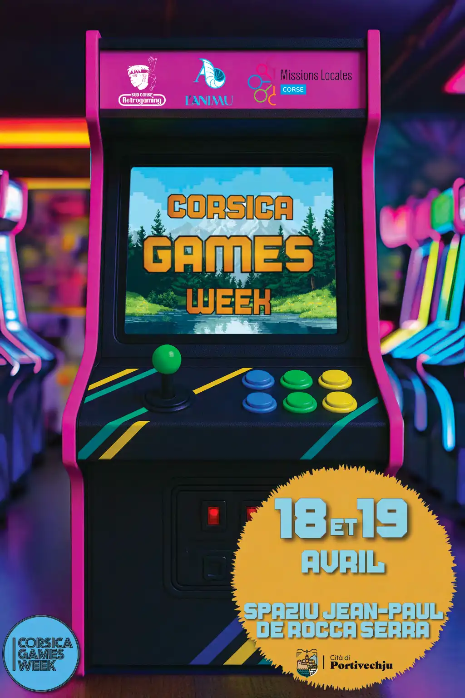
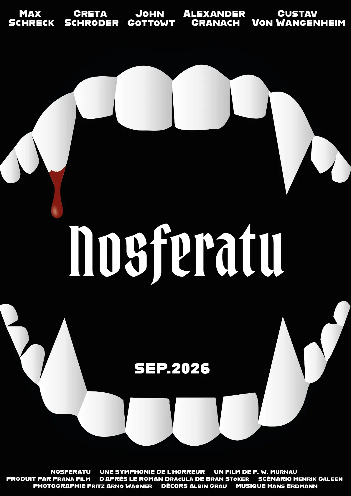

Découvrez mes créations visuelles et réalisations graphiques.

Ce projet, dans le cadre de la SAÉ 103, avait pour objectif la création d'une ou plusieurs affiches pour l'événement Corsica Games Week. À partir d'un moodboard réalisé individuellement, nous devions concevoir une nouvelle identité visuelle de l'événement, incluant la création d'un ou plusieurs nouveaux logos.

Ce projet, réalisé dans le cadre de la SAE 205, avait pour objectif de concevoir une série d'affiches inspirées de l'univers du film Nosferatu de 1922.

Ce projet visait l'apprentissage des bases d'Illustrator via la reproduction vectorielle d'une célébrité. Il a constitué une mise en pratique concrète des outils de dessin et de la gestion des calques

La réalisation de ce travail m'a permis de me familiariser avec l'environnement Photoshop et d'appréhender la diversité de ses outils pour mener à bien une composition graphique cohérente.